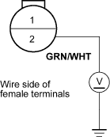
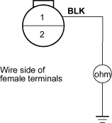
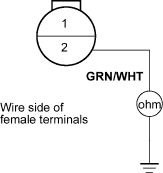

- Disconnect the radiator fan switch 2P connector.
- Turn the ignition switch ON (II).
- Measure voltage between the No. 2 terminal of the radiator fan switch 2P connector and body ground.
RADIATOR FAN SWITCH 2P CONNECTOR

Is there battery voltage?
YES - Go to step 4.
NO - Repair open in the wire between the radiator fan switch 2P connector terminal No. 2 and under-hood fuse/relay box. 
- Turn the ignition switch OFF, and check for continuity between the No. 1 terminal of the radiator fan switch 2P connector and body ground.
RADIATOR FAN SWITCH 2P CONNECTOR

Is there continuity?
YES - Replace the radiator fan switch.
NO - Check for an open in the wire between the radiator fan switch 2P connector terminal No. 1 and body ground. If the wire is OK, check for a poor ground at G301.

- Remove the radiator fan relay from the under-hood fuse/relay box and test it, refer to the 2001 Civic Shop Manual (see page 22-80).
Is the relay OK?
YES - Go to step 2.
NO - Replace the radiator fan relay.
- Remove the radiator fan switch, and test it (see page 10-17).
Is the radiator fan switch OK?
YES - Go to step 3.
NO - Replace the radiator fan switch.
- Disconnect ECM connector B (24P) and the under-hood fuse relay box 14P connector.
- Check for continuity between the No. 2 terminal of the radiator fan switch 2P connector and body ground.
RADIATOR FAN SWITCH 2P CONNECTOR

Is there continuity?
YES - Repair short in the wire between the radiator fan switch 2P connector terminal No. 2 and under-hood fuse/relay box.
NO - Replace the under-hood fuse/relay box.